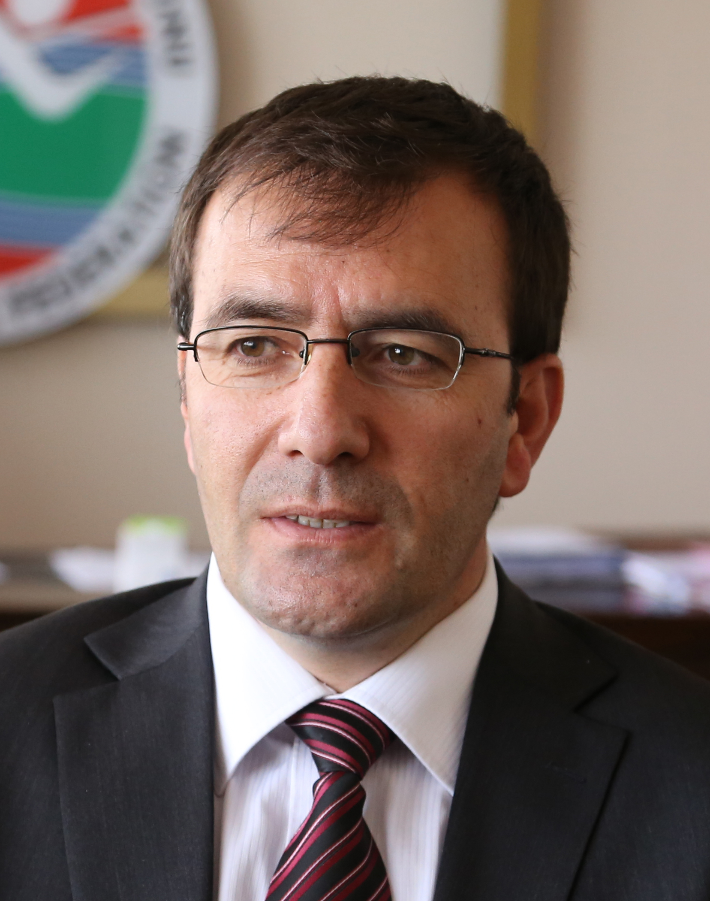

ABAF Vice-President: Fatih Cintimar / TUR (President Turkish Athletic Federation)

Curriculum Vitae:
- Name: Cintimar
- First name: FATIH
- Date of birth: 21 December 1969
- Nationality: Turkish
- Marital status: Married with three children
Present Occupation:
- since 2013 - President of the Turkish Athletic Federation
Working Experience:
- 2003-2013–Provincial Head of the Youth and Sports General Directorate in Erzurum
- 2013 –Vice Coordinator of Mediterranean Games in Mersin
- 2012 –President of the Turkish Ice Hokey Federation
- 2011 –Vice Coordinator of Universiade Winter Games in Erzurum
- 1996-2003 – Lecturer at Ataturk University, Facultiy of Education, Phisical Education and Sport
Sport Career:
- 1993 - Awarded "Athlete of theYear"
- Champion in 10000m in the International Eurasia Marathon Champion in 1994, 1995, 1996
- Senior Turkey Cross Country Champion in 1991, 1992, 1993, 1994, 1995
- 1994 – European National Cup, come in second in 5000m
- 1995 – European National Cup Champion in 10000m
- 1995 – Grand Ataturk Run Champion in 10000m
- 1987 - 2002 Wore the national vest 103 times in 1500m, 5000m, 10000m, cross country
Head Office:
75, Vassil Levski Blvd., 1040 Sofia, Bulgaria
phones: (+359 2) 9885462; (+359 2) 9300669
fax: (+359 2) 9880714
headoffice@balkan-athletics.eu